<style>
    .project-name{
        font-size: 2rem !important;
    }

    .projects-h2{
        font-size: 1.5rem !important;
        text-decoration-color: white !important;
        text-decoration-line: underline !important;
        text-decoration-style: solid !important;
    }

    .project-container ul{
        margin-top: 0 !important;
    }

    .project-container ul>li:not(:first-child){
        padding-top: .5rem !important;
    }

    .projects-h3{
        font-size: 1.2rem !important;
        font-weight: 600 !important;
    }

    .projects-accent{
        font-weight: 600 !important;
    }

    .projects-image-text{
        display: flex !important;
        gap: 1rem !important;
    }
</style>
<section class="project-container">
    <div class="project-container__logo">
        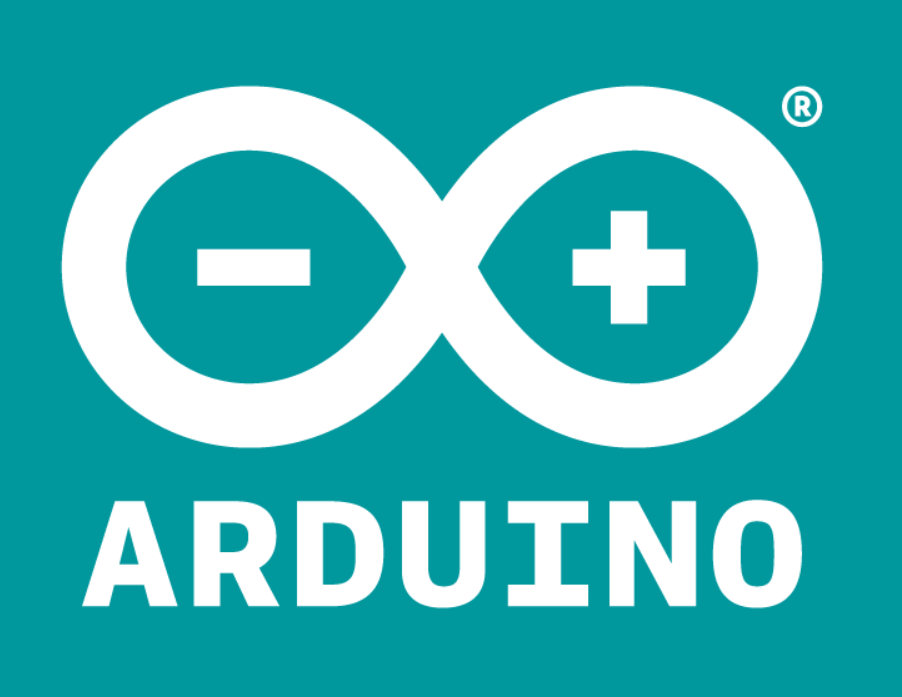
    </div>

    <p class="project-name">Пробный урок</p>
    <div class="description-block">
        <article class="description-block__text">
            <div class="logos">
                <!--  -->
            </div>

            <p class="projects-h2">Что такое ток?</p>

            <p>Перед началом работы с нашей платкой нам нужно знать, что такое ток. </p>
            <a href="https://www.youtube.com/watch?v=ubAL7RCY0M0">https://www.youtube.com/watch?v=ubAL7RCY0M0</a>
            <p>Из видео мы узнали то, что ток — это поток маленьких частиц называемые электронами, которые можно сказать
                текут по трубам, как вода и возникает ток. </p>
            <p>И все было бы легко, но у тока есть 3 три параметра – это:</p>
            <ul>
                <li>Сопротивление (ОМ)</li>
                <li>Напряжение (Вольт)</li>
                <li>Сила тока (Ампер)</li>
            </ul>
            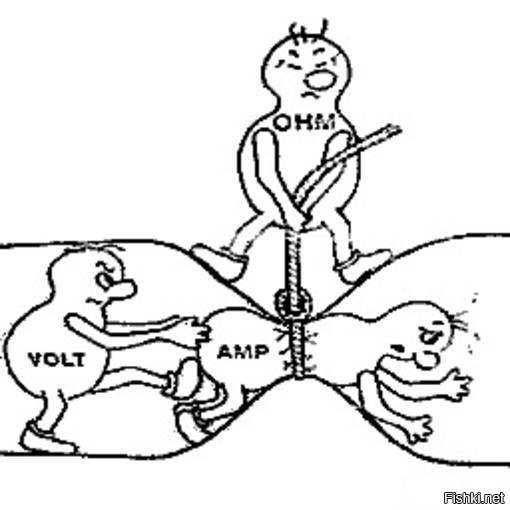
            <p>Как мы видим на рисунке </p>
            <p>Сила тока – это количество наших электронов</p>
            <p>Напряжение — это сила с которая толкает наши электроны</p>
            <p>Сопротивление – это сила, которое мешает проходу наших электронов.</p>
            <p class="projects-h2">Проект 1 - Мигание светодиодов</p>
            <p>Что понадобится:</p>
            <ul>
                <li>плата Arduino</li>
                <li>breadboard</li>
                <li>2 провода «папа-папа»</li>
                <li>светодиод</li>
                <li>резистор.</li>
            </ul>
            <p class="projects-h3">Что такое Ардуино</p>
            <p>Чтобы тебе было легче освоить программирование микроконтроллера, существует так называемый проект
                Arduino. В нем есть готовые платы с микроконтроллером и собственным программным обеспечением для
                создания программ.</p>
            <p>В Arduino все выводы микросхемы контроллера выведены на небольшие металлические контакты в  черных
                гнездах по бокам платы Arduino Uno (на рисунке ниже отмечены желтым цветом). У  микросхем выводы часто
                называют английским словом «пины», потому что там они действительно похожи на иголочки (pin – иголка).
                Выводы платы Arduino по традиции тоже так иногда называют, и, встретив его в  этой книге, помните, что
                пин означает то же самое, что просто вывод. Каждым выводом-пином платы Arduino программа может управлять
                по отдельности.</p>
            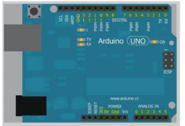

            <p class="projects-h3">Резистор</p>
            <p>Резистор используется для того, чтобы установить нужный ток в элек­трической цепи. Здесь нужно понять
                одну зависимость – <span class="projects-accent">
                    чем больше сопротивление резистора, тем меньше ток и наоборот – чем меньше
                    сопротивление, тем больше ток
                </span>. </p>
            <p>Представь себе резиновый шланг по которому течет вода, если ты наступишь на него, то количество
                вытекающей из него воды станет меньше потому что уменьшится проток. То же самое происходит и с
                электрическим током при его прохождении через резистор.</p>
            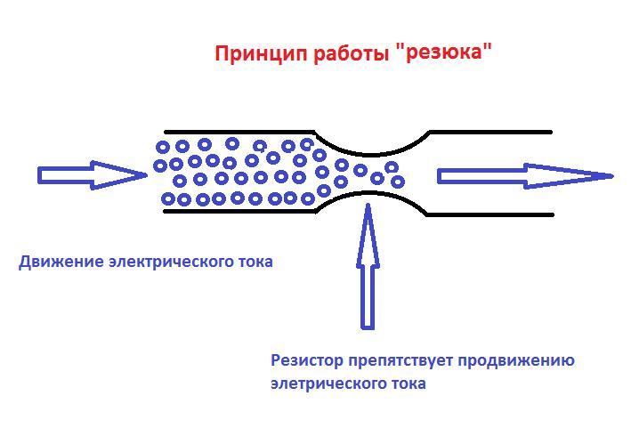
            <p class="projects-h3">BreadBoard</p>
            <p>Основное назначение такой платы — конструирование и отладка прототипов различных устройств. Breadboard
                представляет из себя сетку из гнезд, которые обычно соединяются так: </p>
            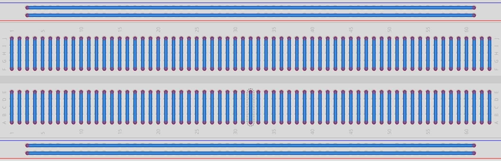
            <p class="projects-h3">Светодиод</p>
            <p>Если говорить простым языком это такая небольшая лампочка, при подачи тока на который он начнёт светится.
            </p>
            <p>Взгляни на светодиод у него есть 2 ножки, одна немного длиннее, вторая короче. Длинная — это плюс + и
                подключается к порту, Короткая — это минус (-) и подключается через резистор к GND.</p>
            <p>Сейчас нужно подключить светодиод по такой схеме </p>
            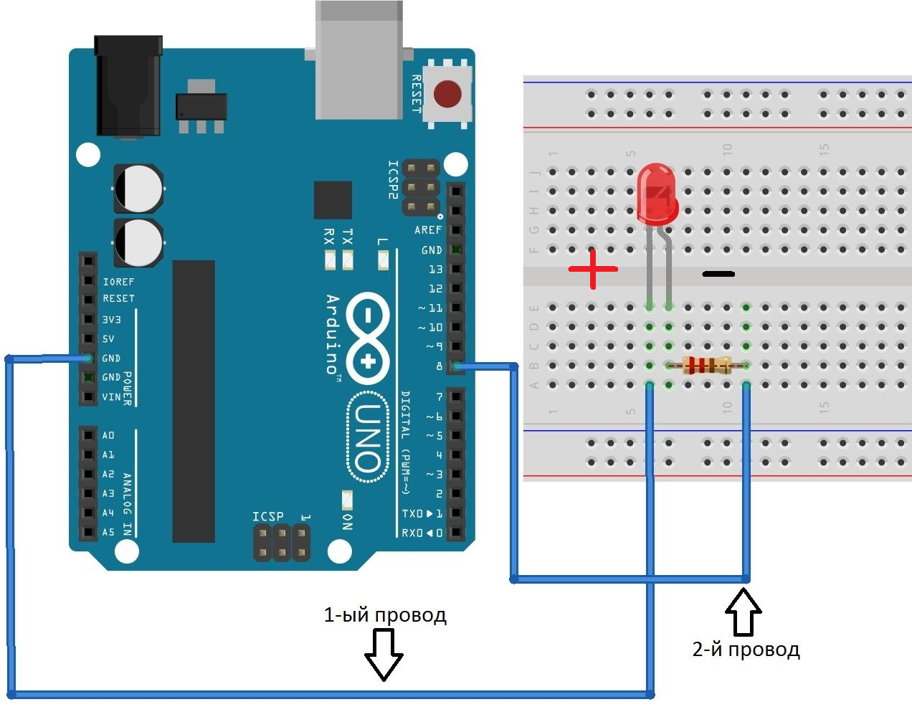

            <p class="projects-h2">Программирование</p>
            <p class="projects-h3">
                Программирование Ardublock. Знакомство с Ардублоком и включение светодиода
            </p>

            <p>Итак познакомимся с такой платформой как АрдуБлок, когда мы только открываем наш АрдуБлок у нас есть
                только 1 такой блок.</p>

            <div class="projects-image-text">
                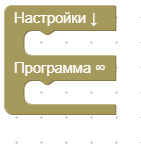
                <p>С ним мы и будем работать основную часть времени, а именно его дополнять. Но для начала давай
                    разберёмся что тут, что значит:
                    Настройка: В этой части блока мы будем настраивать разнообразные пины(порты) или то что будет делать
                    наша платка, когда мы её только включим или перезагрузим.</p>
            </div>
            <p>Программа: Это то что будет делать наша ардуинка, будь то мигание светодиодов, движение моторчиков и так
                далее, те действия которые мы сюда поставим будут выполнятся до бесконечности, пока мы не выключим нашу
                платку. </p>
            <p>Итак, мы разобрались с основным блоком перейдем дальше. Слева у нас есть небольшая панелька с надписью
                “блоки”.</p>
            <div class="projects-image-text">
                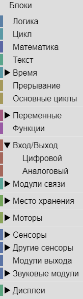
                <div>
                    <p>На всё это можно нажать, и там будут находится наши разнообразные блоки. </p>
                    <p>Теперь давай сделаем нашу первую программку, благодаря которой будем включать светодиод.
                        И так заходим в “Модули выхода” там находим вот такой блок.</p>
                    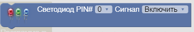
                    <p>Тут есть два таких свойства, первым свойством мы указываем порт к которому подключили светодиод.</p>
                    <p>Вторым что с ним сделать, включить или выключить.</p>
                    <p>Вытаскиваем и засовываем его сюда</p>
                    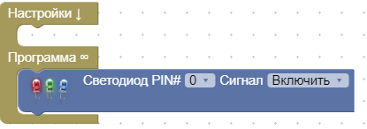
                </div>
            </div>
            <p>Нажимаем сюда, проверяем и загружаем </p>
            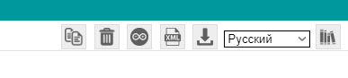

            <p class="projects-h3">Мигание светодиодов</p>
            <p>Теперь давай запрограммируем, чтобы наш светодиод мигал. </p>
            <p>Нам понадобятся эти блоки</p>
            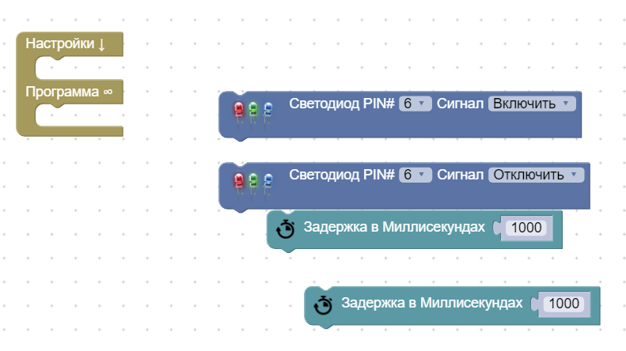
            
            <p>Все блоки нам известны, кроме одного. Задержка в миллисекундах, позволяет нам установить время которое будет выполнятся, то или иное действие.  Теперь давай соберём наши блоки. </p>
            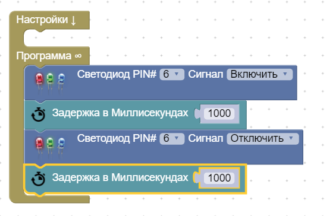

            <p>Если разбирать нашу программу, то мы говорим светодиоду включится, пробыть включенным 1 секунду, затем выключится пробыть 1 секунду в таком положение. И начать программу заново.</p>
        </article>
    </div>
</section>